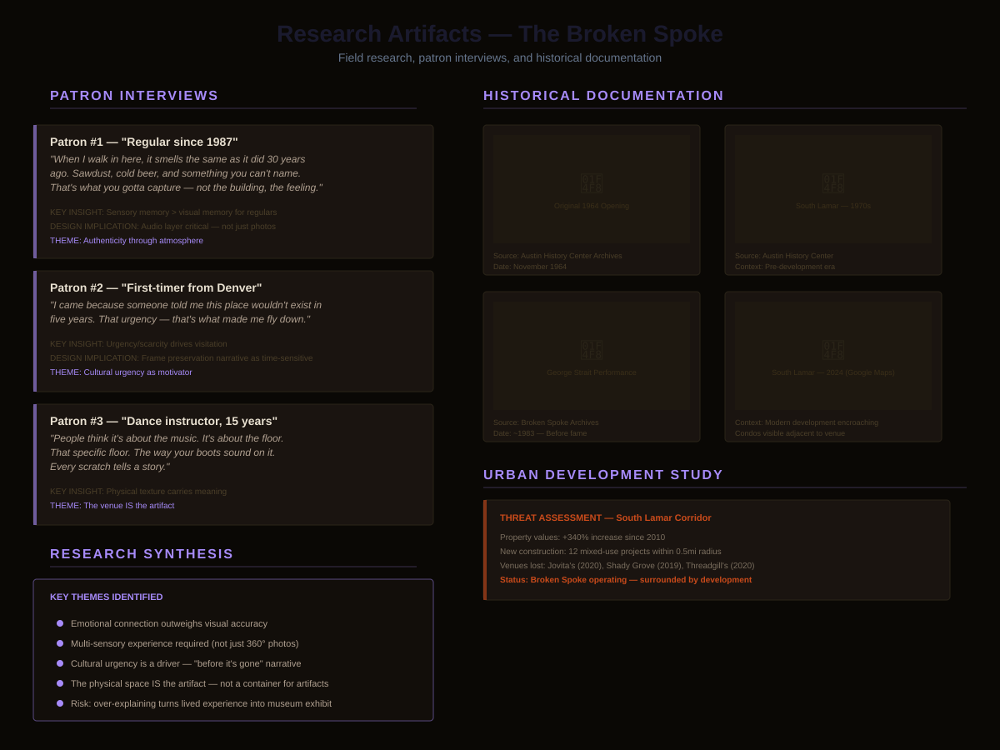

The Broken Spoke — South Lamar Blvd, Austin TX
360° immersive virtual tour preserving Austin's last honky-tonk. 50+ year cultural landmark documented before gentrification erases it.
A honky-tonk that's been on South Lamar for 50+ years is getting squeezed out by gentrification. I built a VR experience to preserve it before it disappears.
360° VR tour — use your mouse or touch to look around. Works on desktop, mobile, and VR headsets.
The Broken Spoke is one of Austin's last true honky-tonks — open since 1964, unchanged by design. As South Lamar developed around it, the threat of losing it became real. This project was about documentation, preservation, and access.
I served as UX lead — responsible for research, user journey design, information architecture within the tour, and testing whether the experience could actually evoke the place.
Rapid urban development and gentrification is physically surrounding The Broken Spoke. With 50+ years of Austin music history concentrated in one building, there's no scalable way to give people access to that heritage — unless you bring it to them.
The challenge wasn't just technical. It was emotional: how do you translate the smell of sawdust, the sound of a Friday night, and the weight of that history into a digital experience without it becoming a museum exhibit?

Started with patron interviews and conversations with locals who've been going to The Broken Spoke for decades. Supplemented with historical photo and document analysis, and a study of Austin's urban development trends. The goal: understand what people actually remember about the place, not what looks good in a screenshot.
Shot the venue in 360° using an Insta360 camera — dance floor, bar, stage, walls covered in decades of memorabilia. The capture had to be intentional: not a documentation dump, but a curated set of views that mirror how someone actually moves through and experiences the space.
Used Lapentor to assemble the 360° captures into an interactive tour — adding hotspots, narrative context, audio-visual elements, and historical information throughout the space. The information architecture question was: what does someone need to see, hear, and read to actually understand what they're standing inside?
User testing focused on one question: emotional authenticity. Does this experience make you feel like you were there? Feedback shaped refinements to the tour flow, hotspot placement, and the balance between historical information and atmosphere. The risk was over-explaining — turning a lived experience into a Wikipedia article with 360° photos.


Anyone, anywhere can now experience The Broken Spoke — no flight to Austin required. The tour remains accessible even as the physical venue faces ongoing development pressure.
A permanent 360° record of the venue, its atmosphere, and its history — captured before further change. Historical context layered throughout makes it a living archive, not just a photo set.
This approach — Insta360 capture + Lapentor interactive hosting — works for any at-risk cultural site. Low overhead, high fidelity, no custom dev required. A replicable preservation toolkit.
"This project taught me that designing for a place people love means every detail carries emotional weight. The goal wasn't to make something impressive — it was to make something that felt true. That distinction changed how I approach empathy-driven design work."